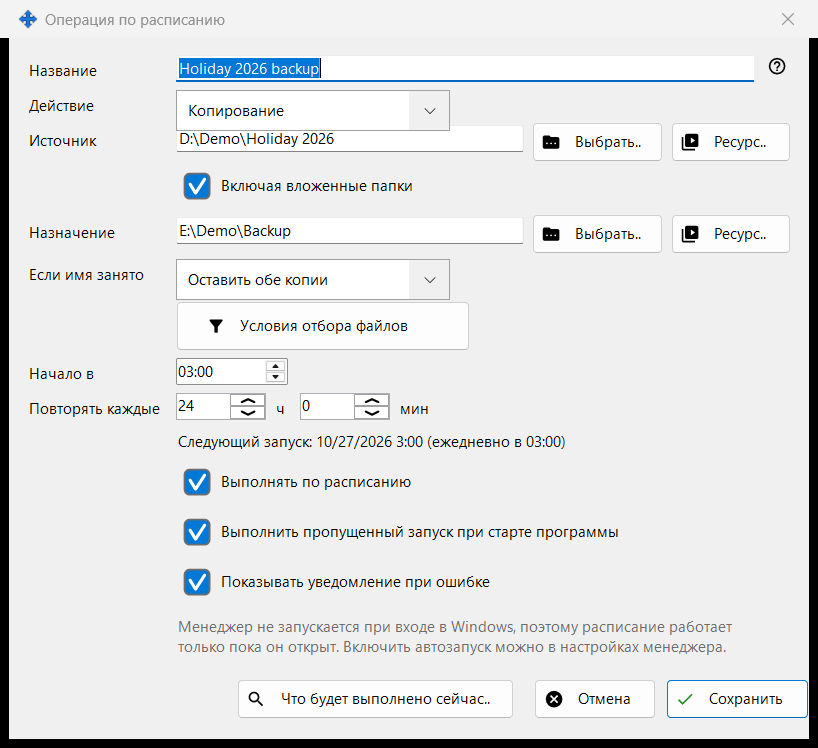
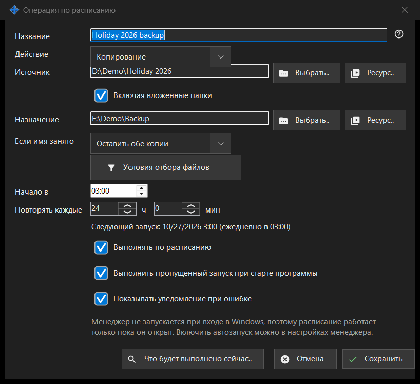

Операция по расписанию
Назначение
Редактирует одну файловую операцию по расписанию: копирование, перенос, удаление или архивацию файлов из источника в назначение с повторением по расписанию. Окно открывается кнопками «Создать..» и «Изменить..» на странице «Файловые операции по расписанию» в настройках Share Manager, а также пунктом «Запланировать операцию для этой папки..» в меню папки просмотрщика, который подставляет эту папку как источник.


Порядок действий
- Введите Название и выберите Действие.
- Задайте Источник и, для копирования, переноса и архивации, Назначение кнопками «Выбрать..», «Ресурс..» или «Через Google Диск».
- Для копирования и переноса выберите, что делать, «Если имя занято».
- Откройте «Условия отбора файлов», чтобы сузить набор файлов.
- Задайте «Начало в» и «Повторять каждые» и оставьте включённым «Выполнять по расписанию».
- Проверьте «Что будет выполнено сейчас..» и нажмите «Сохранить».
Элементы окна
Действие и совпадение имён
Действие - Копирование, Перенос, Удаление или Архивация, и окно показывает только нужные ему строки: у Удаления нет Назначения; «Если имя занято» (Пропустить, Перезаписать, Оставить обе копии) есть только у Копирования и Переноса; «Удалить исходные файлы после проверки архива» есть только у Архивации и удаляет оригиналы лишь после того, как архив прочитан обратно и сверен.
Источник и назначение
Введите полный путь или нажмите «Выбрать..». «Ресурс..» выбирает SFTP-сервер или сетевую папку из списка ресурсов просмотрщика; для Архивации кнопки нет, потому что архив принимает только обычные папки и Google Диск. «Через Google Диск» появляется, только когда вы вошли в Диск или эта сторона уже его использует. Если «Включая вложенные папки» выключено, обрабатываются только файлы самой папки-источника. «Сохранить» отклоняет системные и программные папки, а также назначение, совпадающее с источником или лежащее внутри него, и объясняет, что не так.
Удаление файлов
Когда файлы будут удаляться (Удаление или Архивация с удалением оригиналов), строка «Удаление: ..» сообщает, куда они пойдут: в Корзину или безвозвратно с указанием причины, например на сетевом или съёмном диске нет Корзины. У такой операции Enter не сохраняет; нажмите «Сохранить» осознанно. Запуск по расписанию никогда ничего не спрашивает и записывает, куда ушли удалённые файлы.
Условия отбора файлов
Панель открывается сама, если условия отличаются от стандартных. Типы файлов: Все файлы, Изображения, Аудио, Видео, Документы («Все файлы» отключает остальные четыре). Время изменения: За всё время, Новые с прошлого запуска, За последний час, За последние сутки. «Маска имени» и «Исключить по маске» принимают несколько масок через «;», например *.jpg;IMG_??.png; сравнивается имя файла. «Старше» и «Младше» задаются в днях и часах, «Размер больше» и «Размер меньше» - в МБ. «Включать скрытые и системные файлы» по умолчанию выключено.
Расписание
«Начало в» задаёт время суток, «Повторять каждые» - интервал в часах и минутах; целое число суток повторяется в то же время. Строка под ними показывает «Следующий запуск: время (правило)» или «Расписание выключено: операция выполняется только вручную.» «Выполнить пропущенный запуск при старте программы» и «Показывать уведомление при ошибке» - отдельные параметры. Ещё одна строка сообщает, что расписание работает только пока запущен Share Manager, и запускается ли он при входе в Windows; это окно автозапуск не меняет.
Просмотр и сохранение
«Что будет выполнено сейчас..» показывает список файлов, которые операция обработала бы, и ничего не меняет; для запуска он не нужен. «Сохранить» сохраняет операцию или перечисляет, что нужно исправить. «Отмена» отбрасывает правки.
Настройки менеджера · Настройки общего доступа SFTP · Настройки сервера обмена